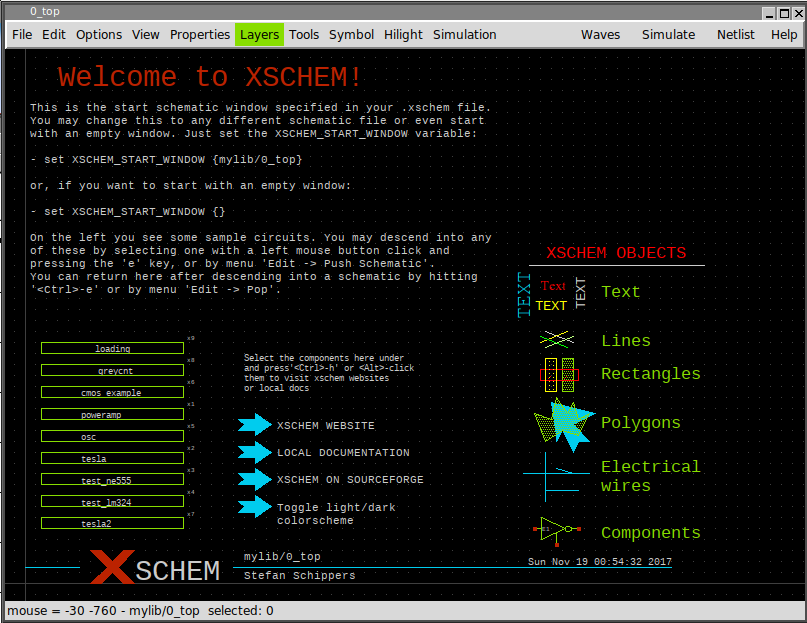
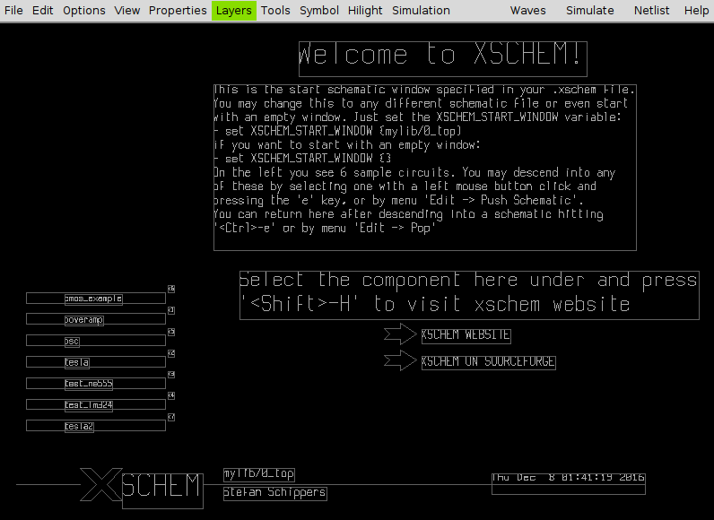
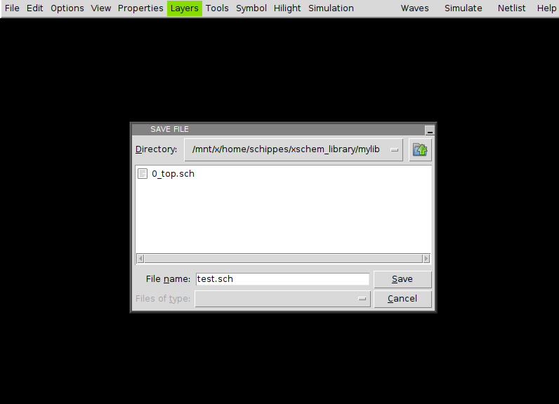

RUN XSCHEM
Assuming xschem is installed in one of the ${PATH} search paths just execute:
user:~$ xschem %
the xschem window should appear. If xschem is not in the search path then specify its full pathname.
CREATING A NEW SCHEMATIC
To create a new schematic one possible approach is to delete the whole drawing window and save with a different name (Save As). If you hit <ctrl>a all elements will be selected (select All function).
Use the Delete key to delete all selected objects. Now press the 's' key or use the menu 'Save As' function, use the TCL fileselector to go to a XSCHEM library (we will cover libraries more in detail later, XSCHEM libraries are just directories where schematic files (.sch) or symbol files (.sym) are stored). in XSCHEM all design libraries are placed under the XSCHEM_DESIGN_DIR defined in the .schem file. Choose for example ~/xschem_library/mylib and write test.sch as the schematic name.
Now a new empty schematic file is created. You can use this test.sch for testing while reading the manual. After exiting XSCHEM you can load directly this schematic with the following commands, they are all equivalent.
# xschem defaults its search to the
# XSCHEM_DESIGN_DIR root path
# .sch may be omitted, it is added by default ...
xschem mylib/test
# or ...
xschem mylib/test.sch
# full paths are OK
xschem ${HOME}/xschem_library/mylib/test.sch
you can load test.sch when xschem is running by using the load command 'L' key or by menu Open command. Use the file selector dialog to locate the schematic and load it in. When loading a new file XSCHEM asks to save the currently loaded schematic if it has ben modified.